EMPLOYEE
MANAGEMENT
SYSTEM
A comprehensive web application designed from scratch that unified employee management, task tracking, payroll, and project operations into one seamless platform, improving operational efficiency by 100%.
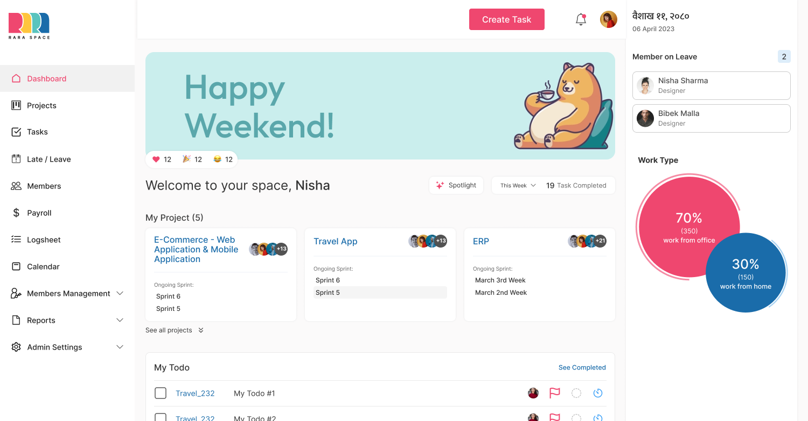
ONE PLATFORM.
ALL OPERATIONS.
RaraSpace is a comprehensive Employee Management System built to streamline and unify all of Rara Digital Lab's internal business operations from employee and task management to payroll, leave tracking, project costing, and inventory.
The existing systems were fragmented, causing communication gaps, inefficiencies in tracking progress, and difficulty managing resources across a dedicated project team of 8 members including designers, developers, and managers. The product needed a single source of truth.
FRAGMENTED.
INEFFICIENT.
FRUSTRATING.
The company faced challenges managing employee activity, task tracking, document handling, and project management all across disparate, disconnected tools. Teams lost time, made errors, and had no unified view of what was happening across the organisation.
Core challenge: Build a user-friendly, all-in-one EMS that reduces operational friction for a cross-functional team without overwhelming users with feature complexity.
UNDERSTANDING
THE PROBLEM SPACE
Before designing anything, I needed to understand how the team actually worked , what broke down, where they lost time, and what they needed most. I used three research methods in parallel.
Google Surveys
Distributed surveys to colleagues to identify pain points in existing systems. Key findings: navigation confusion, empty state errors, and notification overload.
Competition Analysis
Analysed existing EMS tools (Jira, Asana, BambooHR). Found a clear gap: no solution covered the full operational scope , most focused on just one area like tasks or HR.
Stakeholder Alignment
Worked with the product owner to define the solution scope: a unified platform covering 10+ business functions, prioritised by team impact and development feasibility.
Targeted Solution & Goal
The goal was to develop a robust EMS that integrates seamlessly across all business aspects , employee management, task tracking, meeting booking, document management, project management, payroll logs, WFH policy tracking, activity logs, room management, notifications, project costing & analysis, and inventory management , all within a single, user-friendly interface.
The software aimed to provide a one-stop solution for managing diverse business functions efficiently, eliminating the need to switch between disconnected tools.
PAIN POINT
ANALYSIS
Survey results and direct observation revealed four primary pain points. For each, I mapped a concrete design solution.
Complex User Interface
Implemented clear labels and intuitive icons throughout. Simplified navigation hierarchy and reduced visual noise.
Lack of Guidance in Empty States
Updated all empty states with contextual messages, tooltips, and onboarding pop-ups to guide users through first actions.
Navigation Issues
Updated to clear and intuitive Breadcrumb navigation across all pages, giving users persistent context of where they are.
Ineffective Notification Mechanism
Implemented tiered in-app alerts, email notifications, and push notifications with priority levels and user-controlled preferences.
FROM SKETCHES
TO SYSTEMS
I began with rough paper sketches to move fast and validate structure before committing to high-fidelity. Once the flows were confirmed, I moved into Figma to build the full prototype.
Paper sketches covered 8+ screens including Dashboard, Employee list, Projects, Tasks, Leave management, Leave application, Leave history, and Leave response flows. Each sketch was reviewed with the dev team before moving to Figma.
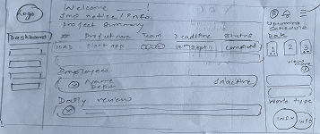
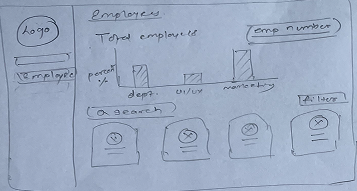
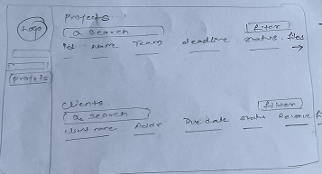
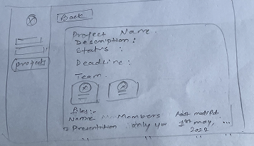
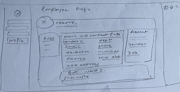
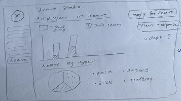
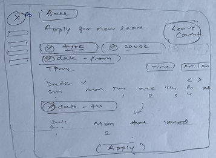
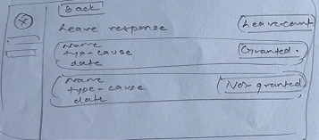
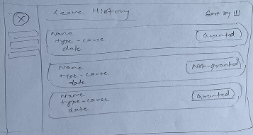
BEFORE &
AFTER
Each design decision was driven by a specific user pain point uncovered in research. Here are the most impactful changes made during the design phase.
Icon-only navigation
Sidebar used ambiguous icons with no labels, causing users to memorise locations rather than recognise them intuitively.
Labelled icon navigation + active state
Added clear text labels to every nav item. Active page highlighted with orange accent. Reduced navigation errors immediately in testing.
Blank empty states
When users landed on a section with no data, they saw a blank white area with no instructions , leaving them stranded.
Guided empty states with CTAs
Each empty state now includes an illustration, a friendly message, and a clear action button , turning confusion into momentum.
No breadcrumb trail
Users inside nested pages (e.g., Project → Sprint → Task) had no clear sense of where they were or how to navigate back.
Persistent breadcrumb navigation
Every nested view now shows a full breadcrumb trail (e.g. Beta ERP → Sprint X → Beta_125), giving users constant orientation.
Single notification channel
All notifications fired the same way regardless of urgency , causing alert fatigue and missed critical updates.
Tiered notification system
Notifications segmented into in-app alerts, email digests, and push notifications , each with configurable user preferences and priority levels.
THE FINAL
ITERATION
Multiple rounds of usability testing with colleagues refined the design. Continuous iterative testing ensured the final product resonated with real end-users before handoff.
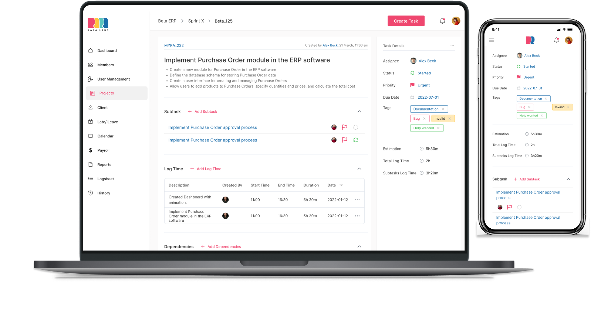
TESTING
WITH REAL
USERS
Multiple rounds of user testing were conducted to validate the design changes. This involved collecting feedback from colleagues and refining the UI/UX based on their insights. Continuous testing allowed for iterative improvements and ensured the final design resonated well with end-users.
Round 1: Paper prototype walkthroughs with 4 colleagues. Identified navigation confusion and empty state issues , both added to the pain point backlog.
Round 2: Figma prototype testing with 6 users. Validated breadcrumb navigation improvement. Discovered notification preferences needed more granular control.
Round 3: Live build testing before launch. Final iteration confirmed improved task discoverability and a significant reduction in navigation errors.
THE RESULTS
Measured outcomes from the RaraSpace EMS launch , tracked through team feedback, analytics, and stakeholder review.
WHAT I LEARNED
Cross-functional collaboration
The handoff process included working with stakeholders, development teams, and key participants. I expanded my experience collaborating with cross-functional members and learned which design decisions are technically feasible and which require early engineering alignment.
Impact on user experience
The design decisions made had a measurable positive impact on the overall user experience. Analysing user interactions and feedback post-implementation validated the effectiveness of the design in creating a genuinely user-friendly interface.
Designing for cognitive load
With 10+ modules in a single platform, the biggest challenge wasn't adding features , it was knowing what to hide. Progressive disclosure and clear information hierarchy became the most critical design tools throughout the project.
The value of early paper sketching
Starting with rough paper wireframes , even for a complex enterprise product , allowed me to move faster in the early stages and get team alignment before investing time in Figma. A habit I carry into every project now.
LIKE WHAT
YOU SEE?
Let's talk about what we can build together.